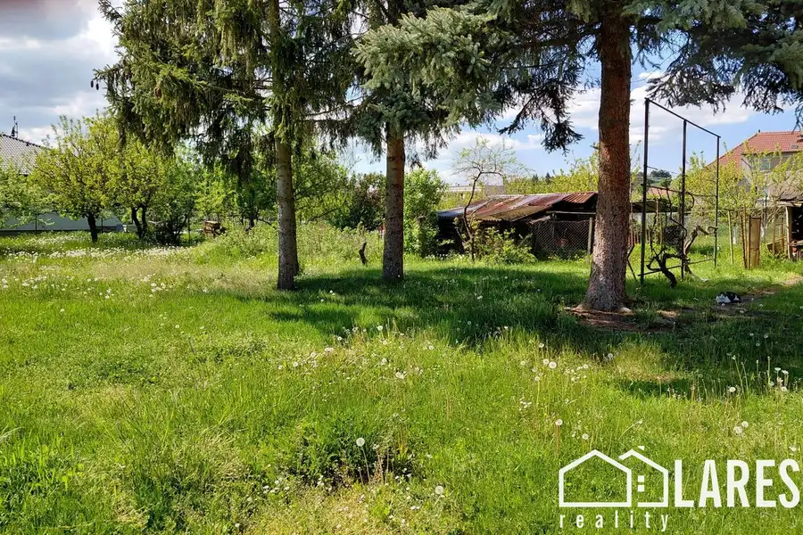
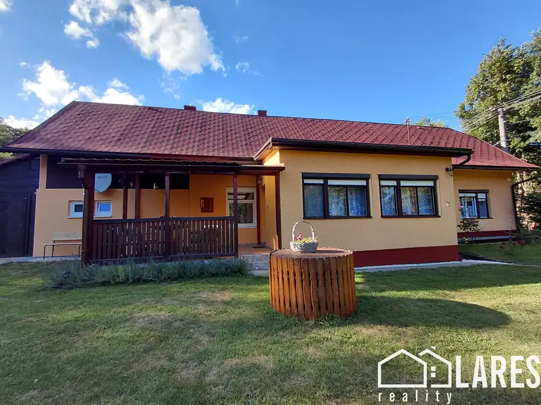
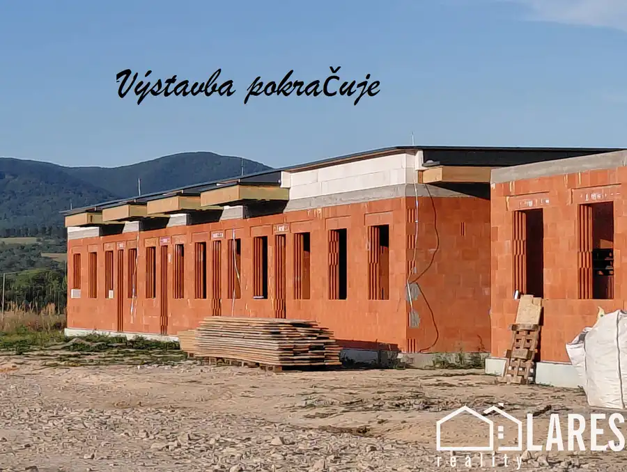

LARES REALITY: Prenájom 3 izbového bytu po rekonštrukcii, 64 m2, Kanianka, okr. Prievidza
Kanianka
- Dispozícia3-izbový
- Plocha64 m²
- Poschodie5. z 7
- StavKompletná rekonštrukcia
- VlastníctvoOsobné
O nehnuteľnosti
Na dlhodobý prenájom: Kompletne zrekonštruovaný 3-izbový byt s loggiou v Kanianke.Dáme do dlhodobého prenájmu príjemný, kompletne zrekonštruovaný 3-izbový byt s loggiou v obci Kanianka. Byt sa nachádza na 5. poschodí v zateplenom bytovom dome s výťahom. Má ideálnu orientáciu na východ a západ, čo zabezpečuje dostatok svetla počas celého dňa. Nachádza sa v lokalite s kompletnou občianskou vybavenosťou a skvelými možnosťami na oddych v prírode.Byt je voľný od 1. novembra 2026.Základné informácie:* Celková výmera: 64,21 m² podlahovej plochy* Poschodie: 5. poschodie s výťahom* Dispozícia: 3 obytné miestnosti a príslušenstvo (kuchyňa, chodba, kúpeľňa, samostatné WC, loggia)* Pivnica: K bytu prislúcha pivnica v suteréne bytového domu* Stav: Kompletná rekonštrukcia, prenajíma sa ako čiastočne zariadený (ideálne pre vlastný nábytok v obývačke, posteľ, detská izba)* Orientácia: Východ / ZápadLokalita a výhody:Obec Kanianka ponúka všetko potrebné pre pohodlný život. V tesnej blízkosti sa nachádza škola, škôlka, obchody, pošta, lekár, kultúrny dom a autobusová zastávka. Okolie je ideálne pre milovníkov prírody a aktívneho oddychu – blízko je Kanianska priehrada, lesy vhodné na hubárčenie, turistické trasy a cyklotrasy.Podmienky prenájmu:* Byt je určený na dlhodobý prenájom* Hľadáme nájomcov bez domácich zvierat a bez malých detí* Mesačné nájomné: 510 € (cena je vrátane energií)* Podmienky nástupu: Pri podpise zmluvy sa hradí počiatočná platba vo výške 4-mesačného nájmu (4x 510 €)Kontakt pre záujemcov:* Meno: Ľubica Ertlová* Telefón: 0905 068 404* E-mail: lubica.ertlova@gmail.com
Parametre
| Cena vrátane energií | Nie |
|---|---|
| Druh | 3 izbový byt |
| Dátum zverejnenia | 22. 9. 2026 |
| Energetický certifikát budovy | nie je |
| Orientácia | Východná, Západná |
| Podlažie | 5 |
| Počet izieb / miestností | 3 |
| Počet lodžií | 1 |
| Počet nadzemných podlaží | 7 |
| Počet pivníc | 1 |
| Počet spální | 3 |
| Stav nehnuteľnosti | Kompletná rekonštrukcia |
| Typ | Prenájom |
| Typ konštrukcie | Panelová |
| Umiestnenie | Ďalšie nadzemné podlažie |
| Vlastníctvo | Osobné |
| Vybavenie | Lodžia, Pivnica, Verejné parkovanie, Výťah |
| Vykurovanie | Ústredné |
| Úžitková plocha | 64 m² |
Kde to je


Mohlo by Vás zaujímať

PozemokNové10 46 000 €LARES reality: Slnečný rovinatý pozemok na výstavbu domu, 587 m2, Dvorec, Bánovce nad Bebravou Dvorec 576 m² Exkluzívne ponúkame na predaj ideálny slnečný pozemok na výstavbu rodinného domu o výmere 576 m2. Nachádza sa v tichej časti obce Dvorec len 3 km od…
DomNové10 262 000 €LARES REALITY: EXKLUZÍVNE: Rodinný dom v Tužine, 1439 m2 Tužina 94 m² Rozprávkové rodinné bývanie s vlastným jazierkom: Čarovný rodinný dom v náručí prírody v TužineTúžite po absolútnom pokoji, súkromí a mieste, kde…
DomNové10 180 000 €LARES reality: Exkluzívne: RADOVÁ ZÁSTAVBA 4 izb. RODINNÝCH DOMOV na kľúč, MALINOVÁ, okres Prievidza Malinová 103 m² Výstavba napreduje: Pripravujeme pre Vás nové bývanie v Malinovej v okrese Prievidza – v nádhernom slnečnom prostredí pre tých, ktorí túžia po pokoji…